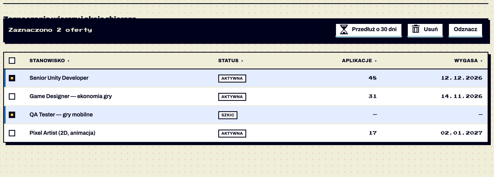

Wzorce / Zaznaczanie wierszy
Zaznaczanie wierszy i akcje zbiorcze
testowy Zaznaczanie wierszy i akcje zbiorcze · od 1.8 — brakuje: użycie na 2 ekranach, test z czytnikiem
Ta sama akcja na wielu pozycjach tabeli (przedłuż, usuń, opublikuj). Dla akcji na jednej pozycji wystarczy przycisk w wierszu (.btn-compact) albo menu „więcej” (K25). Potwierdzone w dokumentacji S01 §6.19.

Anatomia i komponenty składowe
| Część / rola | Wymagana / opcjonalna | Składnik / źródło | Co można zmienić / status |
|---|---|---|---|
| kolumna checkboxów | wymagana | .col-check | Potwierdzone w dokumentacji |
| checkbox w nagłówku | wymagany | [data-select-all] ze stanem „częściowo” | Potwierdzone w dokumentacji |
| checkbox w wierszu | wymagany | [data-select-row] + aria-label | Potwierdzone w dokumentacji |
| pasek akcji | wymagany | .bulk-bar[data-bulk-for] | przyklejony do dołu Potwierdzone w dokumentacji |
| licznik | wymagany | .bulk-count z odmianą | Potwierdzone w dokumentacji |
Warianty i zastosowanie
| Oś | Wartość | Kiedy użyć | Co się zmienia | Ograniczenia / status / źródło |
|---|---|---|---|---|
| stan wiersza | zaznaczony | — | tło --row-selected + lewa krawędź 4 px --focus | Potwierdzone w dokumentacji |
| stan nagłówka | częściowo | część wierszy | indeterminate | Potwierdzone w dokumentacji |
| pasek | ukryty / widoczny | 0 / ≥ 1 zaznaczonych | pojawia się przy pierwszym | Potwierdzone w dokumentacji |
Zachowanie, treści i lokalizacja
„Zaznaczono 2 oferty” — odmiana 1/2–4/5+. Akcja niszcząca zawsze z oknem potwierdzenia z liczbą pozycji („Usunąć 3 oferty?”) Potwierdzone w dokumentacji. Sortowanie tabeli nie gubi zaznaczenia Potwierdzone w dokumentacji.
Zalecane i niewskazane
| Zalecane — przykład | Niewskazane — przykład | Powód / status / źródło |
|---|---|---|
| tło + krawędź zaznaczonego wiersza | sam kolor tła | WCAG 1.4.1 Potwierdzone w dokumentacji |
| 2–3 akcje + Odznacz | 8 akcji w pasku | Rekomendacja |
| potwierdzenie przy Usuń | natychmiastowe usunięcie wielu pozycji | Potwierdzone w dokumentacji |
Tokeny i style
| Zastosowanie | Token | Tryb / wariant | Wartość | Źródło | Status |
|---|---|---|---|---|---|
| zaznaczony wiersz | --row-selected | jasny / ciemny | #E4ECFF / #1F3A6B | S02 | Potwierdzone w dokumentacji odcienie spoza palety |
| krawędź | --focus | #2469B3 / #F7C93E | S02 | Potwierdzone w dokumentacji | |
| pasek | --ink / --on-ink | — | S02 | Potwierdzone w dokumentacji |
Wymiary, odległości i układ
| Elementy / krawędzie | Wariant | Wartość / relacja | Token | Reguła / źródło / dokładność |
|---|---|---|---|---|
| kolumna | — | 40 px | — | Potwierdzone w dokumentacji |
| pasek | — | 16 px od dołu, padding 10×12 | --z-sticky | Potwierdzone w dokumentacji |
Typografia
| Rola tekstu | Styl | Font / weight | Rozmiar | Interlinia | Tracking | Kolor / zachowanie / status |
|---|---|---|---|---|---|---|
| licznik | pixel-xs | Press Start 2P | 11 | 1.6 | — | --on-ink Potwierdzone w dokumentacji |
Przykład na żywo
Ta sama sekcja co w examples/wzorce.html — działa na systemie 1.11.0. Przełącz motyw w nagłówku, żeby zobaczyć tryb ciemny.
Zaznaczanie wierszy i akcje zbiorcze
Zaznaczony wiersz ma tło i lewą krawędź (nie tylko kolor), nagłówek ma stan „częściowo”. Pasek akcji pojawia się przy pierwszym zaznaczeniu i trzyma się dołu ekranu.
| Senior Unity Developer | Aktywna | 48 | 12.12.2026 | |
| Game Designer — ekonomia gry | Aktywna | 31 | 14.11.2026 | |
| QA Tester — gry mobilne | Szkic | — | — | |
| Pixel Artist (2D, animacja) | Aktywna | 17 | 02.01.2027 |
Kod przykładu
<section class="ex" id="zaznaczanie" aria-labelledby="h-sel">
<h2 id="h-sel">Zaznaczanie wierszy i akcje zbiorcze</h2>
<p>Zaznaczony wiersz ma tło i lewą krawędź (nie tylko kolor), nagłówek ma stan „częściowo”. Pasek akcji pojawia się przy pierwszym zaznaczeniu i trzyma się dołu ekranu.</p>
<div class="table-wrap"><table class="table" id="t-oferty" data-selectable>
<caption class="sr-only">Twoje oferty</caption>
<thead><tr><th class="col-check" scope="col"><label class="checkbox"><input type="checkbox" data-select-all aria-label="Zaznacz wszystkie oferty"></label></th>
<th scope="col"><button class="sort" type="button">Stanowisko</button></th><th scope="col"><button class="sort" type="button">Status</button></th><th class="num" scope="col"><button class="sort" type="button">Aplikacje</button></th><th class="num" scope="col"><button class="sort" type="button">Wygasa</button></th></tr></thead>
<tbody>
<tr><td class="col-check"><label class="checkbox"><input type="checkbox" data-select-row aria-label="Zaznacz: Senior Unity Developer"></label></td><td class="name">Senior Unity Developer</td><td><span class="badge badge-sm">Aktywna</span></td><td class="num">48</td><td class="num">12.12.2026</td></tr>
<tr><td class="col-check"><label class="checkbox"><input type="checkbox" data-select-row aria-label="Zaznacz: Game Designer"></label></td><td class="name">Game Designer — ekonomia gry</td><td><span class="badge badge-sm">Aktywna</span></td><td class="num">31</td><td class="num">14.11.2026</td></tr>
<tr><td class="col-check"><label class="checkbox"><input type="checkbox" data-select-row aria-label="Zaznacz: QA Tester"></label></td><td class="name">QA Tester — gry mobilne</td><td><span class="badge badge-sm">Szkic</span></td><td class="num">—</td><td class="num">—</td></tr>
<tr><td class="col-check"><label class="checkbox"><input type="checkbox" data-select-row aria-label="Zaznacz: Pixel Artist"></label></td><td class="name">Pixel Artist (2D, animacja)</td><td><span class="badge badge-sm">Aktywna</span></td><td class="num">17</td><td class="num">02.01.2027</td></tr>
</tbody></table></div>
<div class="bulk-bar" data-bulk-for="t-oferty" hidden>
<span class="bulk-count" data-forms="ofertę|oferty|ofert"></span>
<button class="btn btn-secondary btn-compact" type="button" data-bulk="extend"><span class="icon i-hourglass" aria-hidden="true"></span>Przedłuż o 30 dni</button>
<button class="btn btn-secondary btn-compact" type="button" data-bulk="delete"><span class="icon i-trash" aria-hidden="true"></span>Usuń</button>
<button class="btn btn-secondary btn-compact" type="button" data-bulk-clear>Odznacz</button>
</div>
</section>Właściwości i atrybuty
| Właściwość / atrybut | Typ | Wartości pokazane / opisane | Domyślna | Efekt i zastosowanie | Zależności / status / źródło |
|---|---|---|---|---|---|
| data-selectable | flaga na table | — | — | włącza | Potwierdzone w dokumentacji |
| data-forms | tekst | ofertę|oferty|ofert | pozycję|pozycje|pozycji | odmiana licznika | Potwierdzone w dokumentacji |
| data-bulk-clear | flaga | — | — | odznacz wszystko | Potwierdzone w dokumentacji |
| table.ppSelected() | funkcja | — | — | lista zaznaczonych wierszy | Potwierdzone w dokumentacji |
Specyfikacja (design.md §6.19)
<table id="…" data-selectable>: pierwsza kolumna .col-check z checkboxem w nagłówku (data-select-all, stan „częściowo” = indeterminate) i w każdym wierszu (data-select-row + aria-label="Zaznacz: <nazwa>"). Zaznaczony wiersz: aria-selected="true", tło --row-selected i lewa krawędź 4 px --focus. Pasek .bulk-bar[data-bulk-for] pojawia się przy pierwszym zaznaczeniu, przykleja się do dołu ekranu, pokazuje „Zaznaczono 3 oferty” (odmiana w data-forms) i 2–3 akcje .btn-compact + „Odznacz”. Akcja niszcząca (Usuń) zawsze z oknem potwierdzenia z liczbą pozycji.
Cel: WCAG 2.2 AA. Statyczne materiały i testy automatyczne w Chrome nie dowodzą zgodności — miejsca oznaczone „Do testu we wdrożeniu” wymagają testu z czytnikiem ekranu (design.md §0.6).
| Obszar | Ustalenie lub wymaganie | Dowód / status | Kryterium / wzorzec | Jak sprawdzić |
|---|---|---|---|---|
| checkboxy | natywne, aria-label „Zaznacz: | Potwierdzone w dokumentacji | WCAG 1.3.1, 4.1.2 | czytnik Do testu we wdrożeniu |
| wiersz | aria-selected na tr | Potwierdzone w dokumentacji | APG Grid (wybór) — tu zwykła tabela | czytnik Do testu we wdrożeniu |
| pasek | pojawienie się bez ogłoszenia — rozważyć aria-live dla licznika | Do potwierdzenia | WCAG 4.1.3 | czytnik Do testu we wdrożeniu |
Źródła
S01 §6.19; S03 ui-controls.js; S21 (sekcja Zaznaczanie).